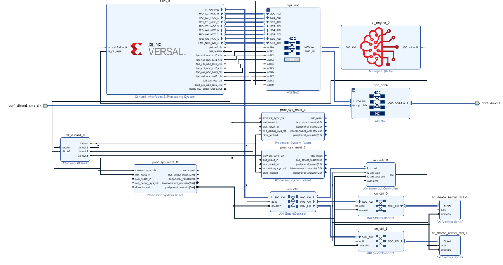

Versal Platform Creation Quick Start¶
Version: 2022.1
Board: VCK190
In this module, we will get started with three steps to quickly create a platform and run applications to validate this platform based on VCK190 evaluation board in short.
This time we will utilize Versal extensible platform from the CED example, using pre-built Linux common image and Createdts command to generate software components. And then create an embedded Versal acceleration platform. At last, leverage the Vector Addition example to validate this platform. Besides if you need to customize the Linux system image you can refer to the PetaLinux customization page for reference.
Step 1: Create Vivado Design and Generate XSA¶
Create a workspace and Launch Vivado if you haven’t
mkdir WorkSpace
cd WorkSpace
Run
source <Vitis_Install_Directory>/settings64.shto setup Vivado running environmentRun Vivado by typing
vivadoin the console.
Download the Versal Extensible Embedded Platform Example
Click menu Tools -> Vivado Store..
Click OK to agree to download open source examples from web
Select Platform -> Versal Extensible Embedded Platform and click the download button on the tool bar
Click Close after installation complete.
Create the Versal Extensible Embedded Platform Example project
Click File -> Project -> Open Example
Click Next
Select Versal Extensible Embedded Platform in Select Project Template window.
Input project name and project location. Keep Create project subdirectory checked. Click Next.
Select target board in Default Part window. In this example, we use Versal VCK190 Evaluation Platform .Click Next.

Configure Clocks Settings. You can enable more clocks, update output frequency and define default clock in this view. In this example, we can keep the default settings.
Configure Interrupt Settings. You can choose how many interrupt should this platform support. 63 interrupts mode will use two AXI_INTC in cascade mode. In this example, we can keep the default setting.
Configure Memory Settings. By default, the example design will only enable DDR4. If you enable LPDDR4, it will enable both DDR4 and LPDDR4. In this example, we can keep the default setting.
Click Next.
Review the new project summary and click Finish.
After a while, you will see the design example has been generated.
The generated design is like the following:

At this stage, the Vivado block automation has added a Control, Interface & Processing System (shorten with CIPS in the future) block, AXI NOC block, AI Engine, and all supporting logic blocks to the diagram, and applied all board presets for the VCK190
Generate Block Diagram
Click Generate Block Diagram from Flow Navigator window

Select Synthesis Options to Global to save generation time.

Click Generate button
Note: It’s safe to ignore this critical warning. Vitis will connect this signal in the future.

Export hardware platform with the following scripts
Click File -> Export -> Export Platform. Alternative ways are: Flow Navigator window: IP Integrator -> Export Platform, or the Export Platform button on the bottom of Platform Setup tab.
Click Next on Export Hardware Platform page
Select Hardware. If there are any IP that doesn’t support simulation, we need to generate Hardware XSA and Hardware Emulation XSA separately. Click Next
Select Pre-synthesis, because we’re not making an DFX platform. Click Next
Input Name: VCK190_Custom_Platform, click Next
Update file name to vck190_custom_hw, click Next.
Review the summary. Click Finish.
vck190_custom_hw.xsa file will be generated in
Vivado project locationdirectory.
Step 2: Create Vitis Platform¶
Download Versal common image from Xilinx website download page., place it under your
WorkSpacedirectory and extract the common image.tar xvf ../xilinx-versal-common-v2022.1.tar.gz .
Create the device tree file
Utilize XSCT tool to execute one command to generate device tree files:
cd WorkSpace source <Vitis_Install_Directory>/settings64.sh xsct
Then execute
createdtscommand in XSCT console like below:createdts -hw <full path>/vck190_custom_hw.xsa -out . -zocl \ -platform-name mydevice -git-branch xlnx_rel_v2022.1 -board \ versal-vck190-reva-x-ebm-02-reva -compile
Notice
-hwoption is your XSA file generated in step1 located in your Vivado Project directory namedvck190_custom_hw.xsa. Besides below information would show in XSCT console. Please ignore the warning and that means you succeed to get system.dtb file which is located in <mydevice/psv_cortexa72_0/device_tree_domain/bsp/>.pl.dtsi:9.21-46.4: Warning (unit_address_vs_reg): /amba_pl@0: node has a unit name, but no reg property pl.dtsi:41.26-45.5: Warning (simple_bus_reg): /amba_pl@0/misc_clk_0: missing or empty reg/ranges property
Type
exitin console to exit XSCT console.As uboot image in common image package does not have default environment variables. So we need to update the bootargs manually. We prepare one system-user.dtsi under
ref_filesdirectory. Just copy it to device tree BSP directory and modify system-top.dts to include it like below.cp system-user.dtsi mydevice/psv_cortexa72_0/device_tree_domain/bsp/ echo "#include \"system-user.dtsi\"" >> mydevice/psv_cortexa72_0/device_tree_domain/bsp/system-top.dts
Rebuild the dts file:
cd mydevice/psv_cortexa72_0/device_tree_domain/bsp/ gcc -I my_dts -E -nostdinc -undef -D__DTS__ -x assembler-with-cpp -o \ system.dts system-top.dts #preprocess the dts file because DTC command can not recognize the #include grammar dtc -I dts -O dtb -o system.dtb system.dts # compile the dts
Then the updated DTB file is located in <mydevice/psv_cortexa72_0/device_tree_domain/bsp/> folder.
Create Vitis platform
Create two directories under
WorkSpacedirectory for FAT32 partition and boot components. Then prepare images like the following:cd WorkSpace mkdir sd_dir mkdir boot cp xilinx-versal-common-v2022.1/boot.scr sd_dir/ cp xilinx-versal-common-v2022.1/bl31.elf boot/ cp xilinx-versal-common-v2022.1/u-boot.elf boot/ cp mydevice/psv_cortexa72_0/device_tree_domain/bsp/system.dtb boot/install SDK tool by typing
sh xilinx-versal-common-v2022.1/sdk.sh -d xilinx-versal-common-v2022.1/ -yin console. Option of -d is to specify the directory where to install. Option of -y means confirmation. So it will be installed inxilinx-versal-common-v2022.1/folder.Run Vitis by typing
vitisin the console.In the Vitis IDE, select File > New > Platform Project to create a platform project.
Enter the project name. For this example, type
vck190_custom, click Next.In the Platform page, click Browse button, select the XSA file generated by the Vivado. In this case, it is located in
<Your Vivado Project Directory>/vck190_custom_hw.xsa. Click Next.Set the operating system to linux.
Set the processor to psv_cortexa72.
Click Finish.
Click the linux on psv_cortexa72 domain
Update the Display Name to
xrtby clicking the edit button on the right of this line and input the name. We’d like to indicate this is a Linux domain has XRT installed and is capable of running acceleration applications.Set Bif file: Click the drop down-button like the following diagram and select Generate BIF. The generated BIF file is generated in the resource directory.

Boot Components Directory: Browse to boot and click OK. Bootgen will look for boot components referred by BIF in this directory to generate BOOT.BIN
FAT32 Partition Directory: Browse to sd_dir and click OK. Files in this directory will be copied to FAT32 partition of SD card.
QEMU Data: Browse to step3_pfm/boot/ and click OK. Emulator will use boot components from this directory.
Click vck190_custom project in the Vitis Explorer view, click the Build button to generate the platform.
Note: If there are additional QEMU settings, please update qemu_args.txt accordingly.
After this step2 we have completed the platform creation process and next, we will run an application to validate this platform.
Step 3: Validate this Vitis PLatform¶
Run Vitis by typing
vitisin the console. (if you have launched Vitis, please omit this step)Select menu File -> New -> Application Project.
Go through the welcome page and click Next.
On Platform page, select vck190_custom platform in the platform list. Click Next.
Set Application project name to vadd, target processor psv_cortexa72_SMP. Click Next.

Input Sysroot path <xilinx-versal-common-v2022.1/sysroots/cortexa72-cortexa53-xilinx-linux>
Input RootFS path <xilinx-versal-common-v2022.1/rootfs.ext4>
Input Kernel Image path <xilinx-versal-common-v2022.1/Image>
Click Next.
Select template Vector Addition. Click Finish.
Select vadd_system project
Click the drop down of Build hammer icon on tool bar, select Hardware. Alternatively, this step can be done by selecting Active Build Configuration to Hardware and click the build icon.
It takes some time to build hardware. Finally Vitis will generate sd_card.img in vadd_system/Hardware/package directory.
Run the Application on Hardware¶
Copy
vadd_system/Hardware/package/sd_card.imgto local if you build the project on a remote server or virtual machine.Program sd_card.img to SD card. Refer to AR#73711 for detailed steps.
Note: Please eject the SD card properly from the system after programming it.
Connect to UART console
Insert the SD card and boot the VCK190 board with SD boot mode (SW1[4:1] = “1110”: OFF, OFF, OFF, ON) and power on.
Note: Refer to VCK190 Evaluation Board User Guide for details about boot mode.
Launch the test application from UART console
Follow below steps to run the application if you are using common image from Xilinx Downloads website
Go to auto mounted FAT32 partition and run the application like below:
cd /run/media/sd-mmcblk0p1 ./simple_vadd krnl_vadd.xclbin
Follow below steps to run the application if you are using image from your Petalinux project
You will need to login with user
petalinuxfirst and setup a new password (it’s then also the sudo password):Log into the system
petalinux login:petalinux You are required to change your password immediately (administrator enforced). New password: Retype new password: petalinux:~$ sudo su We trust you have received the usual lecture from the local System Administrator. It usually boils down to these three things: #1) Respect the privacy of others. #2) Think before you type. #3) With great power comes great responsibility. Password: petalinux:/home/petalinux#
Go to auto mounted FAT32 partition and run the application like below:
petalinux:/home/petalinux# cd /run/media/sd-mmcblk0p1 petalinux:/home/petalinux# ./simple_vadd krnl_vadd.xclbin
Expected print on UART console
Show Log
root@petalinux:/run/media/mmcblk0p1# ./vadd binary_container_1.xclbin
EXE: /run/media/mmcblk0p1/simple_vadd
[XRT] WARNING: The xrt.ini flag "opencl_summary" is deprecated and will be removed in a future release. A summary file is generated when when any profiling is enabled, so please use the appropriate settings from "opencl_trace=true", "device_counter=true", and "device_trace=true."
[XRT] WARNING: The xrt.ini flag "opencl_device_counter" is deprecated and will be removed in a future release. Please use the equivalent flag "device_counter."
INFO: Reading krnl_vadd.xclbin
Loading: 'krnl_vadd.xclbin'
[ 74.394840] zocl-drm amba_pl@0:zyxclmm_drm: zocl_create_client: created KDS client for pid(577), ret: 0
[ 74.395731] zocl-drm amba_pl@0:zyxclmm_drm: zocl_destroy_client: client exits pid(577)
[ 74.401000] zocl-drm amba_pl@0:zyxclmm_drm: zocl_create_client: created KDS client for pid(577), ret: 0
Trying to program device[0]: edge
[ 74.937477] [drm] skip kind 29(AIE_RESOURCES) return code: -22
[ 74.938038] [drm] found kind 8(IP_LAYOUT)
[ 74.938641] [drm] found kind 9(DEBUG_IP_LAYOUT)
[ 74.939375] [drm] skip kind 25(AIE_METADATA) return code: -22
[ 74.939688] [drm] found kind 7(CONNECTIVITY)
[ 74.940087] [drm] found kind 6(MEM_TOPOLOGY)
[ 74.940907] [drm] Memory 0 is not reserved in device tree. Will allocate memory from CMA
[ 74.948647] [drm] Memory 1 is not reserved in device tree. Will allocate memory from CMA
[ 74.963753] cu_drv CU.2.auto: cu_probe: CU[0] created
[ 74.974174] cu_drv CU.2.auto: ffff000803cbac10 xrt_cu_intr_thread: CU[0] start
[ 74.989334] [drm] zocl_xclbin_read_axlf f4f049d5-183a-e265-264d-ecfa34a51343 ret: 0
[ 75.037345] [drm] bitstream f4f049d5-183a-e265-264d-ecfa34a51343 locked, ref=1
[ 75.038188] zocl-drm amba_pl@0:zyxclmm_drm: ffff000800323c10 kds_add_context: Client pid(577) add context CU(0xffffffff) shared(true)
[ 75.041054] zocl-drm amba_pl@0:zyxclmm_drm: ffff000800323c10 kds_del_context: Client pid(577) del context CU(0xffffffff)
[ 75.042096] [drm] bitstream f4f049d5-183a-e265-264d-ecfa34a51343 unlocked, ref=0
[ 75.094803] [drm] bitstream f4f049d5-183a-e265-264d-ecfa34a51343 locked, ref=1
[ 75.095393] zocl-drm amba_pl@0:zyxclmm_drm: ffff000800323c10 kds_add_context: Client pid(577) add context CU(0xffffffff) shared(true)
Device[0]: program successful!
[ 75.188269] zocl-drm amba_pl@0:zyxclmm_drm: ffff000800323c10 kds_add_context: Client pid(577) add context CU(0xffffffff) shared(true)
[ 75.192218] zocl-drm amba_pl@0:zyxclmm_drm: ffff000800323c10 kds_add_context: Client pid(577) add context CU(0x0) shared(true)
TEST PASSED
[ 78.347703] zocl-drm amba_pl@0:zyxclmm_drm: ffff000800323c10 kds_del_context: Client pid(577) del context CU(0xffffffff)
[ 78.349191] zocl-drm amba_pl@0:zyxclmm_drm: ffff000800323c10 kds_del_context: Client pid(577) del context CU(0x0)
[ 78.354584] zocl-drm amba_pl@0:zyxclmm_drm: ffff000800323c10 kds_del_context: Client pid(577) del context CU(0xffffffff)
[ 78.355356] [drm] bitstream f4f049d5-183a-e265-264d-ecfa34a51343 unlocked, ref=0
[ 78.462912] zocl-drm amba_pl@0:zyxclmm_drm: zocl_destroy_client: client exits pid(577)
Fast Track¶
Scripts are provided to package and test the Vitis platform.
To use these scripts, please download Versal common image from Xilinx website download page. and give its path to the following command.
Run build
# cd to the ref_files directory, e.g. cd ref_files make all COMMON_IMAGE_PATH=<path/to/common_image/>
To clean the generated files, please run
make clean
Copyright© 2022 Xilinx